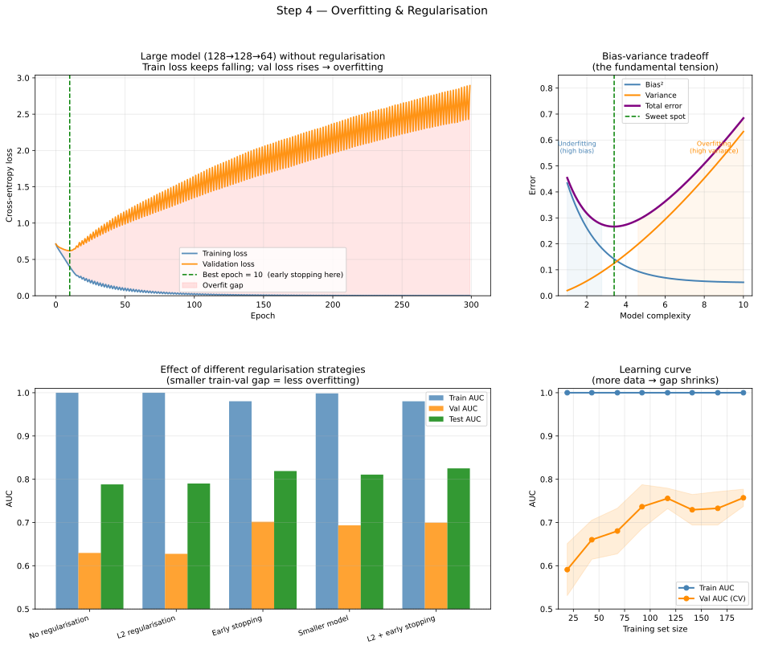

Machine Learning from Scratch: a Physicist's Road to Generative Models IV
Section 4: Overfitting: When a Model Learns Too Much
The trap that comes with power
The previous section (section 3) left us with a neural network capable of drawing curved, complex decision boundaries in feature space, boundaries that logistic regression could never produce. That expressiveness is valuable, but it comes with a risk that anyone who has fitted a high-degree polynomial to a small dataset will recognise immediately. A model with enough parameters can always find a way to pass perfectly through every training point. Whether that perfect fit means anything for new data (the test dataset) is a different question entirely.
This is the central tension of machine learning, and it has a name: overfitting, when a model learns the training data so thoroughly that it memorises its noise along with its signal1, and then fails to generalise to unseen examples. Understanding it, detecting it, and curing it is not a technical detail. It is arguably the most practically important skill in the whole discipline, and it maps directly onto one of the most familiar problems in experimental physics.
You have seen this before: the polynomial fit analogy
Before any neural networks, consider a problem you have almost certainly encountered in a physics lab or analysis course. You have \(N = 15\) data points drawn from some smooth physical relationship, with added Gaussian measurement noise. You want to fit a polynomial of degree \(d\).
When \(d = 1\) (a straight line), the model is too simple. It cannot follow the curvature in the data, leaving systematic residuals, a pattern in the errors that the model failed to capture. This is underfitting. The training error is high, and the test error (the error on the new data) is equally high, for the same reason: the model is structurally unable to represent the truth.
When \(d = 12\), the polynomial has enough freedom to pass through every one of your 15 points almost exactly. The training error approaches zero. But if you collect 15 new points from the same process and evaluate the polynomial there, it oscillates wildly between the new measurements, it is tracing the noise in the original dataset, not the underlying physical relationship. This is overfitting. Training error is very low; test error is high.
When \(d = 3\) or \(4\), something in between happens: the polynomial is flexible enough to follow the broad shape of the data without chasing every noise fluctuation. Training error is reasonably low, and test error is comparably low. This is generalisation, and it is the goal of machine learning.
Neural networks play exactly the same game. A tiny network with two neurons underfits. A network with ten million parameters applied to a small dataset overfits. The right answer is somewhere in between, and finding it requires a principled methodology.
The bias-variance decomposition
The polynomial example suggests a precise way to think about model error on unseen data. For any model and any data-generating process, the expected error on a new test point can be decomposed into three terms:
\[\text{Total error} = \text{Bias}^2 + \text{Variance} + \text{Irreducible noise}\]
The irreducible noise is the variance in the data itself, measurement uncertainty, stochastic processes, or any randomness baked into the problem. No model, however perfect, can predict below this floor. This is because it is the inherent noise in the data.
The bias measures how wrong the model's average prediction is compared to the true function. A model with high bias makes systematic errors because its functional form cannot represent the truth, a straight line fitted to a quadratic relationship will always be wrong in the same direction, no matter how much data you give it or how long you train it. High bias is underfitting.
The variance measures how sensitive the model's predictions are to the specific training set it happened to see. A model with high variance fits the training data very tightly, so small changes in the training set, using a different random draw of the same 300 events, produce very different models. High variance is overfitting.
The tension (trade-off) between bias and variance is fundamental. As you increase model complexity (more layers in case of neural networks), more neurons, higher polynomial degree, bias decreases because the model can represent more of the truth, but variance increases because the model has more freedom to memorise noise. Total error is the sum, and it has a minimum somewhere in between. The figure below makes this concrete.

Figure 1: Top-left: training and validation loss over 300 epochs for a large unregularised network. The blue training loss falls monotonically; the orange validation loss reaches a minimum around epoch 30–50 and then climbs. The red shaded gap between the two is the overfit region — the model is learning noise, not signal. Top-right: the bias-variance tradeoff schematic. Bias² (blue) falls with complexity; variance (orange) rises. Total error (purple) has a minimum at the sweet spot. Bottom-left: AUC for five regularisation strategies across train, validation, and test sets, the gap column is the key diagnostic. Bottom-right: a learning curve showing how the train-val gap evolves as the training set grows.
The three-way data split
Before we discuss cures, we need the right measurement apparatus. The standard in machine learning is to divide your labelled data into three non-overlapping sets.
The training set (~70% of data) is what the model sees during gradient descent. Parameters \(\theta\) are updated to minimise the loss on this set and only this set.
The validation set (~15%) is used to monitor generalisation during training and to make decisions about hyperparameters — architecture size, learning rate, regularisation strength. Crucially, the model never trains on validation data. It does not update its weights based on validation loss; it only reads the validation loss as a diagnostic.
The test set (~15%) is touched exactly once, at the very end, after all hyperparameter decisions have been made. It provides an unbiased estimate of how the model will perform on genuinely new data. The test AUC is the number you report in your analysis note or paper.
The reason the three-way split is necessary rather than just two sets is subtle but important. If you use the validation set to choose hyperparameters, trying ten different regularisation strengths and picking whichever gives the best validation AUC (see section 3), then the validation set has effectively been used to train those hyperparameters. Your validation performance is no longer an unbiased estimate. The test set exists to provide an estimate that is genuinely clean.
In physics terms: the training set is your Monte Carlo simulation used to optimise the selection cuts; the validation set is an independent MC sample used to evaluate the cuts without bias; the test set is the real data, unblinded once and reported. The logic is identical. Unblinding early and iterating on the result is precisely the mistake of tuning on the test set.
Cures for overfitting
There are five practical tools, each addressing the problem from a different angle. They are not mutually exclusive, in practice, you often use several simultaneously.
More data
The most effective cure for overfitting is also the most obvious: if the model has more training examples, the noise in any single example is diluted by the signal across all others, and variance decreases. Learning curves, plotting both training AUC and validation AUC as functions of training set size, are one of the most practically useful diagnostics available.
When the gap between the two curves is large at all training set sizes, you have an overfitting problem that more data will help. When both curves are low at all training set sizes, you have an underfitting problem that more data will not fix. In particle physics and GW astronomy, where labelled data represents expensive detector events or CPU-intensive GEANT4 simulations, these curves tell you whether it is worth running another batch of simulations before the next iteration.
L2 regularisation
L2 regularisation modifies the loss function by adding a penalty proportional to the sum of squared weights:
\[L_{\text{total}}(\theta) = L_{\text{cross-entropy}}(\theta) + \alpha \sum_{k} \theta_k^2\]
The hyperparameter \(\alpha\) controls how strongly the penalty is applied. The effect is to penalise large weights, any parameter that tries to grow large to memorise a single training example is pulled back toward zero by the penalty term. This means that the model is less likely to overfit to the training data. The result is a model whose weights are all small and distributed, rather than a few large weights dominating specific training patterns.
You will recognise this immediately: L2 regularisation is Tikhonov regularisation (mentioned briefly in section 3), the same technique used in inverse problems in geophysics, image reconstruction, and any ill-posed least-squares system. While the ML community uses \(\alpha\) rather than \(\lambda\) and applies it to neural network weights rather than a linear operator, the mathematics and the motivation are identical.
Early stopping
As training progresses, the model typically moves from a high-bias state (underfitting) to a low-bias, high-variance state (overfitting). Because the training set is a finite sample of the truth, the training loss will continue to decrease almost indefinitely as the model begins to memorise noise. The validation loss, however, will stop decreasing and eventually start to rise as the model's generalisation performance degrades.
Early stopping is the practice of monitoring the validation loss and terminating training at the exact point where it reaches its minimum. This is a remarkably effective "free" regulariser because it requires no change to the model architecture or the loss function, it simply prevents the optimiser (such as gradient descent) from entering the high-variance regime.
Dropout
Dropout is a technique specific to neural networks. During each training step, a random subset of neurons (typically 5% to 50%) is "dropped", their activations are set to zero for that pass. This prevents the network from becoming overly reliant on any single neuron or specific path through the layers.
Because the specific neurons being dropped change at every step, the network is forced to learn redundant representations of the signal. It essentially trains an ensemble of many thinner networks simultaneously. At test time, all neurons are active, and the model's prediction is an average over the knowledge distributed across the entire architecture. Dropout is one of the most powerful tools for regularising very deep networks.
Figure 2: Dropout in action. In training mode each hidden neuron is independently silenced with probability p; click "Resample mask" to see a new random training step. In inference mode all neurons are active and their outputs are scaled by (1 − p) to preserve the expected activation magnitude.
The practical rule: start with early stopping and L2 regularisation; add dropout if the model is still overfitting.
Smaller models
The most direct cure is also the most conceptually clean: reduce the model's capacity so that it is physically incapable of memorising noise. A network with 32 neurons per layer simply does not have enough parameters to store all the idiosyncratic features of 300 noisy training examples. The bottom-left panel in Figure 1 shows that reducing the architecture from 128→128→64 to 32→1632→16 substantially closes the train-validation AUC gap, at the cost of some peak validation AUC. Whether that trade-off is worth it depends on how much data you have and how large the overfit gap is in the larger model.
The right workflow
A practical training workflow brings these tools together in a principled sequence. Start by splitting data into train, validation, and test sets, and then do not look at the test set again until the end. Train a baseline model without regularisation and plot its training history. If the validation loss diverges from the training loss, the model is overfitting: apply L2 regularisation, enable early stopping, or reduce the model size, and retrain. Use the validation AUC to compare regularisation strategies and choose the best. Only then, once and for all, evaluate on the test set and report that number.
The comparison table from the script makes this concrete. Five strategies are compared by their train AUC, validation AUC, and the gap between them. The unregularised baseline shows a large gap (the signature of overfitting). Each regularisation strategy reduces the gap by a different mechanism. The best strategy by validation AUC is selected, and its test AUC is the final reported performance. That test AUC was never used to make any decision, it is a clean, unbiased estimate.
What the code does
The hands-on material for this section is in a dedicated Jupyter notebook in the accompanying GitHub repository ↗. Each section of this series has its own notebook, so you can work through them independently and at your own pace without wading through unrelated code 😇.
The accompanying tutorial notebook ↗ is structured to build the intuition progressively. Part A deliberately constructs a worst-case dataset: 300 events, 20 features, but only 3 of them carry genuine signal information — exactly the situation you face with a high-dimensional detector feature vector where most channels are noise. Ten percent of labels are randomly flipped, mimicking crowdsourced labelling errors or ambiguous cases in a real classification task.
Part B trains a large unregularised network epoch by epoch, saving both training and validation loss at each step, this is how you build a training history manually when you need fine-grained control. The printed output at this stage is the key diagnostic: compare the best-epoch validation loss to the final-epoch validation loss, and compute the overfit gap explicitly.
Part C trains five variants side by side and prints the comparison table. Study
the "Gap" column: a large gap means overfitting; small gap means the
regularisation is working. Part D computes learning curves using sklearn's
built-in learning_curve function, which handles the cross-validation correctly.
Part F prints the final model selection, the best model is chosen by validation
AUC, and then the test AUC is reported once.
The running scorecard
| Technique | Mechanism | Effect |
|---|---|---|
| More data | Dilutes noise with more signal | Reduces variance directly |
| L2 regularisation | Penalises large weights in the loss: \(\alpha \sum \theta^2\) | Prevents single parameters from memorising noise |
| Early stopping | Stops training at the validation loss minimum | Prevents model from entering high-variance regime |
| Dropout | Randomly deactivates neurons during training | Forces redundant, robust representations |
The goal of all these techniques is to move the model away from the "memorisation" regime and toward the "generalisation" regime, where it captures the underlying physics rather than the fluctuations of a specific dataset.
What comes next
With sections 1–4, we have a complete supervised learning toolkit. We can predict continuous outputs, classify events, learn non-linear boundaries, and prevent our models from memorising noise. Every piece of this toolkit answers the question "given x, what is y?"
In the next article, section 5 asks a fundamentally different question: "what is the probability distribution of x itself?" This is density estimation, and it is the bridge to everything that follows: autoencoders, variational autoencoders, and normalising flows. The loss function changes from cross-entropy to negative log-likelihood, but the optimisation principle is to minimise L(\(\theta\)) by gradient descent, the same as in the previous sections.
1 Real-world data is almost always noisy and imperfect: measurements include uncertainty, instrumentation effects, and random fluctuations. ↩